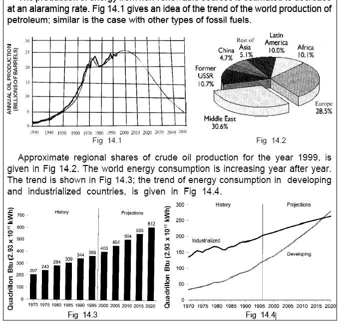
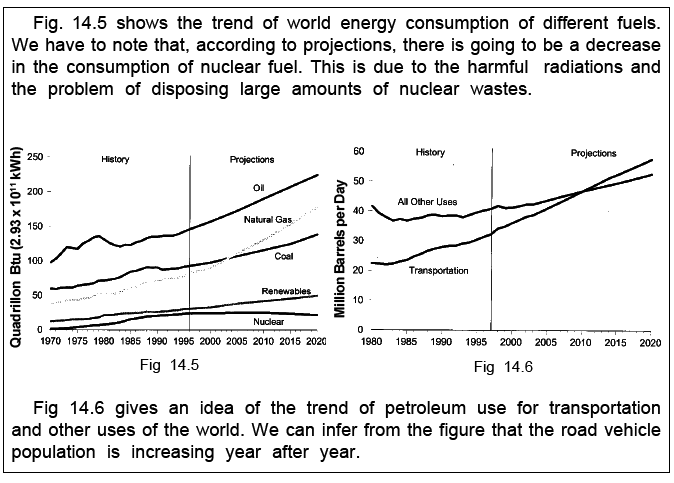

The main energy sources being used by us are coal, petroleum, natural
gas and recently nuclear fuels. All these sources are virtually non-renewable
sources. These have accumulated in nature over a long time and can not be
replaced quickly.
It has been estimated that our coal reserves will last for about 200 to
300 years where as our oil reserves are even more limited and will last for
less than 50 years from now. The fear of running out of eath’s energy resources,
has created a sort of energy crisis.
Existing energy situation, causes for energy crisis and some remedial
measures are considered in this chapter
Energy consumption by a country gives an idea of the living standard of the people of that country. It is obvious that the living standard is high in 14 ENERGY CRISIS 98 developed countries like America and is low in developing countries like India. America and former Soviet Union together produce and consume about 50% of the total energy consumption of the world, although their population is only about 1/8 of the world population. But India with a population of about 1/6 the of the world population produces and consumes only about 3% of the total energy consumption in the world. In order to improve living standards of people, there must be sufficient energy supply to meet the energy demand. According to the existing situation, energy demand is more than the energy supply inspite of the fact there has been increase in energy production during the last two decades. This has led to energy crisis.
 Some of the causes for wastage of energy are listed below.
(a) If you are using a bicycle, you know what happens if it is not regularly
oiled; you will have to peddle harder and harder and use more of your
energy. If this happens in an automobile, extra energy has to be derived
from the fuel; in other words, more fuel is required.
(b) Machines are run by supplying energy. If the engine is defective, more
energy is required.
(c) Even small leakages from the fuel tank of an engine, results in cumulative
wastage of energy.
(d) Sometimes, people keep the automobile engines running for long periods,
even when the vehicle is at rest.
(e) Leaking watertaps, dripping taps and leaking gate valves in water pipes,
result in wastage of water and hence wastage of energy.
(f) Some people are in the habit of keeping water-tap turned on, without
using water during some activities such as face wash, brushing teeth,
dishwashing, washing clothes, collecting water etc., using more water
than necessary.
(g) Water supplied for drinking purposes, is also used for gardening, washing
etc. (note that energy is required in the purification of water for drinking
purposes).
(h) Many people are not in the habit of switching off lights and fans when
leaving their homes. Even when at home, lights and fans are not switched
off in places where not required.
(i) Wastage of electric power in public places.
(j) Inappropriate use of heating facilities at home.
(k) Bad conditions of roads result in increased
energy consumption by automobile vehicles.
(l) The current pattern of luxurious style of living in advanced countries,
involves a high level per capita energy consumption. Even in developing
countries like ours, aristocratic people and people getting free energy
supply, are in the habit of using more energy than needed.